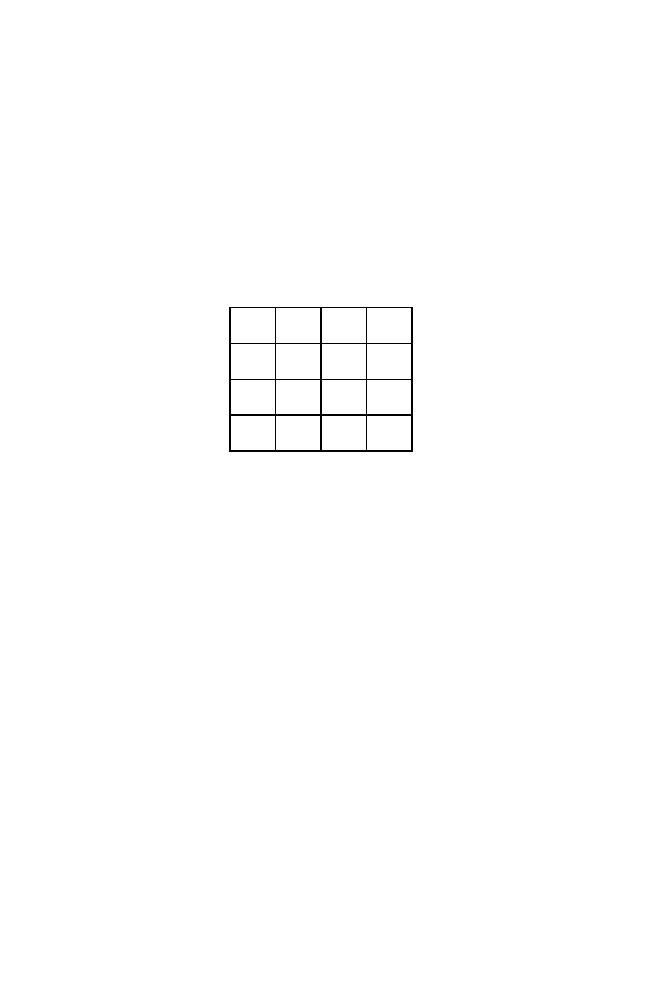

6.7 Multiple Alignment
161
both cases. However, studies of mutations in homologous genes indicate that
transition
mutations (
A
→
G
,
G
→
A
,
C
→
T
, or
T
→
C
) occur approximately
twice as frequently as do
transversions
(
A
→
T
,
T
→
A
,
A
→
C
,
G
→
T
, etc.).
Therefore, it may make sense to apply a lesser penalty for transitions than
for transversions since they are more likely to occur (i.e., related sequences
are more likely to have transitions, so we should not penalize transitions as
much). The collection of
s
(
a
i
, b
j
) values in that case might be represented in
the matrix below:
A C G T
A 1 -1 -0.5 -1
C -1 1 -1 -0.5
G -0.5 -1 1 -1
T -1 -0.5 -1 1
b :
j
a :
i
A second issue relates to the scoring of gaps (a succession of indels). Are
indels independent? Up to now, we have scored a gap of length
k
(see (6.11))
as
w
(
k
) =
−
kδ.
(6.22)
However, insertions and deletions sometimes appear in “chunks” as a result
of biochemical processes such as replication slippage at microsatellite repeats.
Also, deletions of one or two nucleotides in protein-coding regions would pro-
duce frameshift mutations (usually nonfunctional), but natural selection might
allow small deletions that are integral multiples of 3, which would preserve
the reading frame and some degree of function. These examples suggest that
it would be better to have gap penalties that are not simply multiples of the
number of indels. One approach is to use an expression such as
w
(
k
) =
−
α
−
β
(
k
−
1)
.
(6.23)
This would allow one to impose a larger penalty for opening a gap (
−
α
) and
a smaller penalty for gap extension (
−
β
for each additional base in the gap).
6.7 Multiple Alignment
Now that we have explained methods for aligning two sequences, the issue
of aligning three or more sequences naturally arises. It might be that we